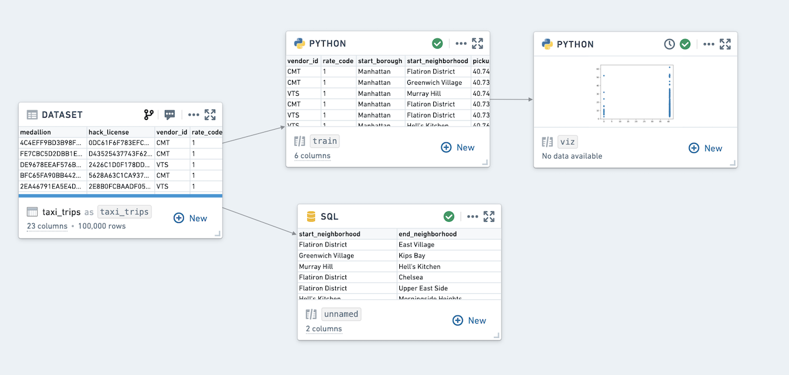

Code Workbook [Legacy]
:::callout{theme="warning" title="Legacy"}
Code Workbook is in the legacy phase of development, and no additional development is expected. Full support remains available. We recommend exploring other applications and tools to serve your use case purposes.
:::
Code Workbook is an application that allows users to analyze and transform data in code using an intuitive graphical interface.

Goals
Code Workbook was designed with these principles in mind:
- Iteration speed: Users can quickly test and refine logic for transformation and visualization in order to produce useful results.
- Low barrier to entry: Code Workbook's graphical interface and the ability to reuse pre-authored logic were designed to enable easy onboarding of users of varying technical skill.
- Collaboration: Disparate groups of users can share logic and work together on a single analysis in Code Workbook.
- Platform interoperability: Users can productionize their findings across the platform by adding visualizations to Notepad, promoting production-ready pipelines to Code Repositories, and iterating on machine learning models.
Features
Key features of Code Workbook include:
- An interactive console for rapid iteration on transformation logic and ad-hoc data exploration.
- Visualization support to create detailed, interactive images with commonly used packages (Matplotlib, Plotly, Seaborn).
- Templates that enable reuse of complex and domain-specific logic through a simple interface.
- Multi-language support for code and template languages to allow users to select the best language for an analysis.
- Branching to facilitate collaboration by isolating usersâ changes from one another.
- A point-and-click user interface that makes it easy to customize the Spark environment, set input types for transforms, and view relationships between nodes.